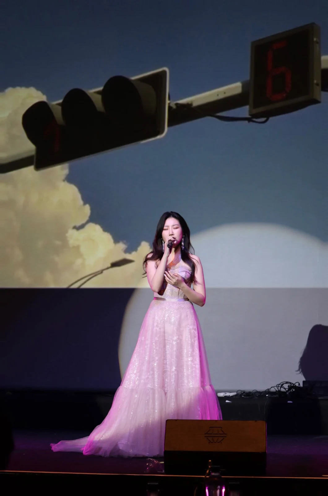
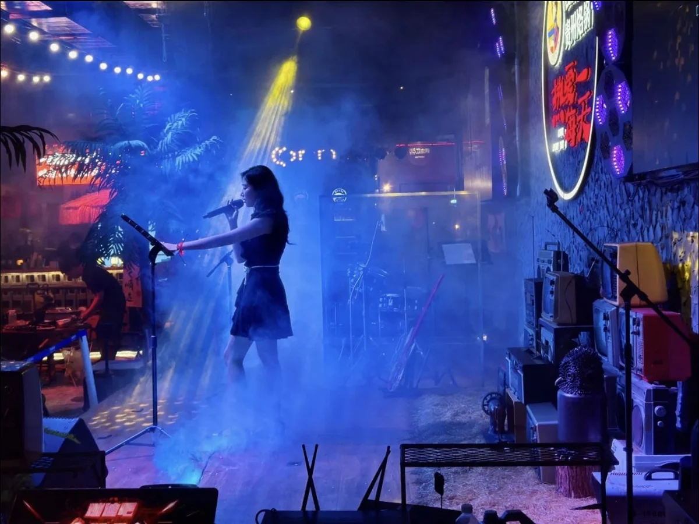

a song for you ↘
XIXI RECORDSSTEREO · 33⅓
xixi
A SIDE · ORIGINAL VOICE
LIVE
with xixi
with xixi
一人一首，今晚的歌单由你写。YOUR SONG. HER VOICE. OUR NIGHT.✳
THE SONGBOOK
今晚，想听什么？
从熟悉的旋律里，
找到属于你的那一首。
曲目 / TRACK原唱 / ARTIST曲风 / GENRE点歌
根据 xixi 提供的歌单整理 · “原唱待确认”曲目可正常选择 · 演唱安排以现场为准
TODAY'S REQUESTS
今日点歌单
按北京时间每日更新，只展示当天点歌。演唱顺序以现场安排为准。
02 / WRITTEN BY XIXI
也听听，我的故事。

ON STAGE / IN THE MOMENT03 / BEHIND THE VOICE
Hi, I'm xixi.
用声音，和你分享每一个此刻。
发布个人单曲 6 首。擅长流行、R&B 与欧美曲风，在音乐节、年会与 Live Bar 持续演出。
演出与合作 · cwx0516@outlook.com ↗04 / A FEW MOMENTS
走过的舞台。
每一次相遇，都在歌里。

2021
中国好声音 · 华东前 20 强
2022
伦敦大学学院春晚 · 特邀嘉宾
帝国理工春晚 · 特邀嘉宾
2023
帝国好声音 · 亚军
2024
伦敦大学学院春晚 · 特邀嘉宾
帝国理工春晚 · 特邀嘉宾
2025
自然美年会
上海玥相医疗美容年会
四川商会音乐节
更多演出足迹 ＋
城邦 c&b 民谣庭院酒馆 · Mai rnb bar · 春日尧 music bar · 杜鹃妹儿音乐酒馆 · 驻定不烦小酒馆 · 言欢 live bar · perrys
谢谢你，把一首歌留给我。
SEE YOU IN THE NEXT SONG.